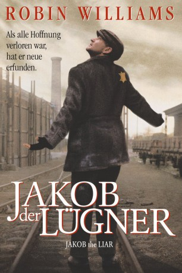

#3974 Jakob der Lügner
 
 IMDB-Wertung: 6.5 / 10
IMDB-Wertung: 6.5 / 10  Metascore: 0
Metascore: 0 
Jakob ist Besitzer eines kleinen Cafs in Polen während des Zweiten Weltkriegs. Eines Tages hört Jakob zufällig die streng verbotenen russischen Nachrichten im Radio. Die Russen berichten von ihren Erfolgen gegen die Wehrmacht. Jakob verbreitet die guten Nachrichten im Ghetto und gibt den Menschen neuen Mut und Hoffnung. Daufhin erfindet er immer weiter gute Nachrichten - bis eines Tages die Deutschen davon erfahren und der Sache auf den Grund gehen.
Jahr: 1999
Dauer: 96 Minuten
FSK: 12
Land: Frankreich Studio: Columbia TriStar FilmTonspuren:
Untertitel:
Auflösung: 720p (960x720) Größe: 1320 MB
Genre: Drama, Krieg
Regisseur: Peter Kassovitz
Drehbuch: Bjørn Olaf Johannessen
Soundtrack:
Darsteller:
 Robin Williams als Jakob
Robin Williams als Jakob Hannah Taylor Gordon als Lina
Hannah Taylor Gordon als Lina Kathleen Gati als Hooker
Kathleen Gati als Hooker Bob Balaban als Kowalsky
Bob Balaban als Kowalsky Alan Arkin als Frankfurter
Alan Arkin als Frankfurter Michael Jeter als Avron
Michael Jeter als Avron Mark Margolis als Fajngold
Mark Margolis als Fajngold Liev Schreiber als Mischa
Liev Schreiber als Mischa Armin Mueller-Stahl als Kirschbaum
Armin Mueller-Stahl als Kirschbaum Mathieu Kassovitz als Herschel
Mathieu Kassovitz als Herschel Gregg Bello als Blumenthal
Gregg Bello als Blumenthal- Nina Siemaszko als Rosa
- Miroslaw Zbrojewicz als SS Officer 1
- Michael Mehlmann als Escaping Man
 Adolf Hitler als Himself - 'Behind Us Comes Germany' Speech , archive sound, uncredited
Adolf Hitler als Himself - 'Behind Us Comes Germany' Speech , archive sound, uncredited- Éva Igó als Lina's Mother
- István Bálint als Lina's Father
 Justus von Dohnányi als Preuss
Justus von Dohnányi als Preuss- János Gosztonyi als Samuel
- Ádám Rajhona als The Whistler
- Antal Leisen als Peg-Leg
- Péter Rudolf als Roman
- Jan Becker als Young German
- János Kulka als Nathan
- Grazyna Barszczewska als Mrs. Frankfurter
- Judit Sagi als Mrs. Avron
- Ilona Psota als Grandmother
- Ági Margitai als Miss Esther
- Iván Darvas als Hardtloff
- László Borbély als Doctor
- Zoltan Barabas als Meyer
- Józef Mika als Soldier
- György Szkladányi als SS Officer 2
- Zofia Saretok als Neighbor
- Mirtill Micheller als Lady Singer
- Orsolya Pflum als Lady Singer
- Beatrix Bisztricsan als Lady Singer
- Anna Nowak als Maria , uncredited
Datei: X:\1999\Jakob der Lügner (1999, FSK12, 960x720).mkv seit 08.07.2016
Festplatte: HD 1996-2002
 Es gibt insgesamt 81 Filme in der Gruppe '1999'
Es gibt insgesamt 81 Filme in der Gruppe '1999'